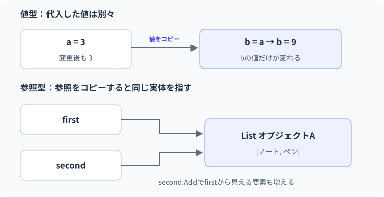

13 値型と参照型 — 詳細解説
値のコピーと参照のコピー。
代入後に片方を変更したとき、もう片方にも変化が見えるでしょうか。値をコピーする例と参照をコピーする例を並べ、格納場所ではなく変更の届く範囲から比べます。
値型・参照型の代入とコピー
値型は変数に値を保持し、通常の代入ではその値がコピーされます。参照型では変数が実体への参照を保持し、通常の代入では参照がコピーされます。参照とは、オブジェクトをたどるための値です。参照をコピーしても、それが指すオブジェクト全体を自動複製するわけではありません。
この区別を「値型はStack、参照型はHeap」とだけ覚えると、クラスのフィールド内のintや配列の要素を説明できなくなります。物理的な配置ではなく、値の意味、コピーされる範囲、実体の共有を先に理解します。Stackは呼び出し状態などに使う後入れ先出しの構造、Heapはオブジェクトなどを管理する領域です。配置には所有する型やJIT最適化も関係します。
最小例：intのコピー
int a = 10;
int b = a;
b = 20;
Console.WriteLine($"a={a}, b={b}");期待出力はa=10, b=20です。bはaに追従する名前ではなく、aからコピーした10を最初に保持する別の変数です。bへの代入はaを変えません。
| 時点 | a | b | 説明 |
|---|---|---|---|
| aの初期化後 | 10 | 未宣言 | aへ10を保存 |
| b=aの後 | 10 | 10 | 整数値10をコピー |
| b=20の後 | 10 | 20 | bだけ更新 |
参照のコピー：変数は二つ、実体は一つ
var first = new Box { Value = 10 };
Box second = first;
second.Value = 20;
Console.WriteLine(first.Value);
Console.WriteLine(ReferenceEquals(first, second));
public class Box
{
public int Value { get; set; }
}期待出力は20、Trueです。ReferenceEqualsは二つの参照が同じオブジェクトを指すかを調べます。最初にBoxの実体Aを作り、firstがAを参照します。second=firstでAへの参照をコピーするので、secondからValueを変えるとfirstからも20が見えます。
- 1first
実体A
- 2second
実体A
- 3実体A
Box { Value = 20 }
この図の「実体A」は説明用の名前で、実際のメモリアドレスを表していません。GCがオブジェクトを移動する可能性もあるため、参照を固定の生アドレスとして説明しません。重要なのは二つの変数から同じ実体へ到達できることです。
さらにsecond = new Box { Value = 30 };とすると、secondは新しい実体Bを参照し、firstはAを参照したままです。プロパティの変更と変数への再代入は異なります。
var first = new Box { Value = 10 };
Box second = first;
second.Value = 20;
second = new Box { Value = 30 };
Console.WriteLine($"first={first.Value}, second={second.Value}");
Console.WriteLine(ReferenceEquals(first, second));
public class Box
{
public int Value { get; set; }
}期待出力はfirst=20, second=30、Falseです。以前の共有状態でfirst側も20になったことは残ります。secondを差し替えたからといって、過去の変更まで取り消されるわけではありません。
本文の実例との対応：値のコピーと参照のコピー
次の図は本文の実例「買い物リストの共有とコピー」を使った補助例です。この節のコードとは変数や入力値が異なるため、処理の対応に注目します。

参照型の代入後に共有されるものを図にします。例としてfirstからsecondへListの参照を代入したと考えます。
二つの変数から同じ要素を読む矢印は参照関係を表します。物理的なメモリ位置やアドレスの図ではありません。
変数を二つ宣言しても、Listが自動で二つ生成されるわけではありません。新しい実体が必要なら生成やコピーの方法を別に指定します。
struct内に参照があるとどうなるか
structは値型を定義する構文です。ただし、structのフィールドに参照型を含められます。そのstructをコピーするとフィールドの値がコピーされ、参照型フィールドでは参照の値がコピーされます。内部にある可変オブジェクトまで自動で複製されるわけではありません。
var original = new Group { Name = "元", Scores = new[] { 10, 20 } };
Group copied = original;
copied.Name = "コピー";
copied.Scores[0] = 99;
Console.WriteLine(original.Name);
Console.WriteLine(original.Scores[0]);
public struct Group
{
public string Name;
public int[] Scores;
}期待出力は元、99です。Nameの参照の再代入はcopied側だけを変更します。一方、Scoresは同じ配列を参照しているため、要素の変更はoriginalからも見えます。
| 操作 | original.Name | copied.Name | 共有するScores |
|---|---|---|---|
| コピー直後 | 元 | 元 | [10,20] |
| Nameを再代入 | 元 | コピー | [10,20] |
| Scores[0]を書き換え | 元 | コピー | [99,20] |
structを使うと自動的に「すべて独立した安全なコピー」になる、という誤解を避けます。小さな値のまとまりを表すならstructやreadonly structが候補になりますが、大きい値や共有状態を持つ型を無計画にstructへ変えても保守性・性能が改善するとは限りません。
浅いコピーと深いコピー
浅いコピーは、直接の要素やフィールドをコピーし、内部の参照先は共有する場合があるコピーです。深いコピーは、目的に応じて内部のオブジェクトまで独立に複製することです。どこまで複製すべきかは、共有してよいものと独立させたいものの設計によって変わります。
var source = new[] { new Item { Name = "A", Count = 1 } };
Item[] shallow = (Item[])source.Clone();
shallow[0].Count = 9;
Console.WriteLine(source[0].Count);
Console.WriteLine(ReferenceEquals(source, shallow));
Console.WriteLine(ReferenceEquals(source[0], shallow[0]));
public class Item
{
public string Name { get; set; } = "";
public int Count { get; set; }
}期待出力は9、False、Trueです。配列自体は別ですが、要素のItemは同じ実体です。Cloneという名前だけで深い複製だと判断しないことが大切です。
修正位置は要素の作り方です。独立したItemが必要なら、それぞれnewします。
var source = new[] { new Item { Name = "A", Count = 1 } };
Item[] independent = new Item[source.Length];
for (int i = 0; i < source.Length; i++)
{
independent[i] = new Item { Name = source[i].Name, Count = source[i].Count };
}
independent[0].Count = 9;
Console.WriteLine(source[0].Count);
Console.WriteLine(independent[0].Count);
public class Item
{
public string Name { get; set; } = "";
public int Count { get; set; }
}期待出力は1、9です。Nameの文字列は不変なので共有してもこの変更では困りません。将来Itemへ可変の子オブジェクトを追加した場合は、そのコピー方針を改めて設計します。循環参照や共有関係を持つデータでは、単純にすべてnewするだけでも元の関係を壊す場合があるため、「深いコピー」の要件を具体化します。
コピーには一つの深さしかないわけではありません。外側の一覧と、その要素の実体を分けます。
同じ一覧を参照一覧の追加・削除も共有
別の一覧になる参照型の要素は共有し得る
要件に合わせて独立させる循環参照なども含めて設計する
new List<T>(元の一覧)などで一覧自体を分けても、Tが可変な参照型なら要素の実体を共有し得ます。独立性が必要な範囲を仕様として決めます。
境界・比較例：struct内の参照型メンバー
structのコピーでも、Itemsに入っている参照の値がコピーされます。リスト本体まで自動でコピーするわけではありません。
var first = new Basket(new List<string> { "ノート" });
var second = first;
second.Items.Add("ペン");
Console.WriteLine(first.Items.Count);
record struct Basket(List<string> Items);想定出力
2Boxingは値をobjectとして扱うときの変換
objectはC#の型体系の共通の基底型です。値型をobjectとして扱うときに、その値をオブジェクトとして包む変換をboxingと呼びます。通常は値のコピーを含みます。取り出すunboxingでは、元の値型との一致に注意が必要です。
int number = 10;
object boxed = number;
number = 20;
int restored = (int)boxed;
Console.WriteLine(restored);
long widened = (int)boxed;
Console.WriteLine(widened);期待出力は10、10です。boxedに包まれたのは最初の10で、numberの後の変更は反映されません。long widened = (int)boxed;はintとして取り出してからlongへ広げます。boxedの中身がintなのに直接(long)boxedとすると、単に数値範囲が広いから取り出せるわけではなく、通常InvalidCastExceptionになります。
ジェネリックなList<int>などを使うと、objectへの変換を必要とせず型を保ったまま操作しやすくなります。boxingの具体的な割り当てがJITで最適化される場合はありますが、値のコピーという意味や型変換の規則は変わりません。
int value = 3; object boxed = value;という例を使います。
- 1value
intの3 - 2objectへ代入
ボックス化で値をコピー - 3value = 9
元の変数だけを変更 - 4boxedからintへ
保持していた3を取り出す
後でvalueへ9を代入しても、boxedから取り出す元のint値は3です。ボックス化は元の変数へ結び付く参照を作る処理ではありません。
GC：到達可能性と寿命を分ける
GCは、アプリが今後利用できる参照のつながりを調べ、到達できなくなったオブジェクトを回収対象にします。調査の起点をルートと呼び、実行中に使われる参照やstaticフィールドなどが関係します。単純に「参照の個数を一つずつ数え、0になった瞬間に削除する」仕組みとしては理解しません。相互に参照し合う二つのオブジェクトでも、外から到達できなければ回収対象になり得ます。
マネージドヒープは世代という区分で管理されます。短命なオブジェクトが多いという性質を利用して回収の効率を高めます。ただし、世代番号を覚えることより、参照を不必要に保持すると回収対象にならないことを理解します。長生きするイベント発行元へ購読を残し、画面の実体が保持され続ける問題はLesson 17のイベントにも関係します。
nullを代入しても回収の時刻を指定したことにはなりません。GC.Collectを通常の解決策として頻繁に呼ぶことも避けます。ファイルなどの資源を決まった時点で閉じるには、Lesson 16のDisposeとusingを使います。メモリの回収と資源の寿命管理は別です。
型を選ぶときの比較
| 観点 | 値型 | 参照型 | 選択の目安 |
|---|---|---|---|
| 通常の代入 | 値をコピー | 参照をコピー | 値として独立させたいか、実体を共有したいか |
| 同一性 | 値の意味が中心 | 同じ実体かが重要な場合がある | 業務の対象をどう識別するか |
| null | Nullable値型で表現 | 参照がnullになり得る | 値なしの意味を定義する |
| 内部の参照 | 含められる | 含められる | 深い不変性を自動で保証しない |
| 配置 | 含まれる場所や最適化次第 | 実体は通常GC管理など | Stack/Heapだけで選ばない |
段階別の練習
基礎はintのコピーとBoxの参照コピーで、変更前・変更後の図を描く課題です。標準はBoxの参照をコピーした後、一方をnewへ差し替え、共有が切れる瞬間を説明します。応用はItem配列の独立コピーへ、NameとCountの変更を一つずつ加え、元の状態が変わらないことを確認する課題です。
よくある間違いは「変数が二つだから実体も二つ」「structだから内部配列も独立」「readonlyだから参照先も不変」の三つです。どれも実体の数と参照のつながりを描けば検討できます。次のLesson 14では、別々の実体であっても内容が等しいと扱いたい場合のrecordと等値性を学びます。
公式資料
確認日：2026年9月14日。本文の理解を補うための資料です。学習対象は.NET 10 / C# 14です。パッチ番号は固定しません。